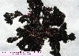
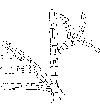

|
 |
| Página de procedencia: | Algas_pardas.htm |  |
|
| Contenido de esta página: | 1.- Características del orden | ||
| 2.- Cuadro Resumen | #Cladostefáceas |
||
| 3.- Más datos: catálogo y claves, familias: | #Esfacelariáceas |
||
| Para las referencias véase | Algas_bibliografia.html | #Estipocauláceas |
|
| Para los términos véase: | Algas_Introduccion.htm |
|
|
| Géneros | Especies | Talos | Imágenes |
|---|---|---|---|
| Cladostephus |
Ejes principales dicotómicos ± recubiertos por verticilos de filamentos simples o poco ramificados |  |
|
| Halopteris |
Talo en arbolilllo muy ramificado, con
ramificación principalmente de tipo lateral. Las ramificaciones laterales se originan por
divisiones de la célula apical, de forma que se sitúan
entre dos segmentos consecutivos del eje
Últimos sistemas de ramificación
dísticos
|
 |
|
| Últimos sistemas de ramificación no dísticos | |
||
| Sphacelaria |
S. cirrosa |
Talo en forma
de pequeño arbolillo epífito, con
ramificaciónes laterales que nacen a partir de las
células superiores de los segmentos del eje, de manera que cada
filamento pertenece a un solo segmento del eje del que nace. Producen propágulos filamentosos en forma de ancla, con varias ramas. La identificación de las especies es difícil y requiere la consulta de bibliografía especializada y la observación de caracteres microscópicos |
 |
| S. fusca |
|||
| S. plumula |
|||
| S. rigidula |
|||
| S. tribuloides |
| 1. |
Últimos sistemas de ramificación
dísticos, es decir, formando un fronde plano parecido a una pluma |
|
| 1. |
Últimos sistemas de ramificación
no dísticos, es decir, con las ramitas laterales repartidas
alrededor del eje |